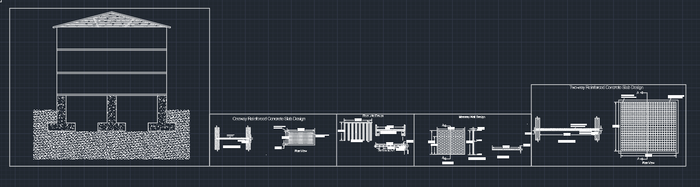

University
University of Roehampton
Bachelor of Engineering (BEng) — Civil Engineering
2024–2027
Currently in Third Year · Expected grade: 2:1
I'm Rochak Lamsal, a third-year Civil Engineering student at the University of Roehampton. Rochak Lamsal Portfolio presents selected coursework and practical experience in structural design, surveying, AutoCAD and fluid mechanics.
I am a third-year Civil Engineering student at the University of Roehampton, developing practical and technical experience through academic engineering projects. My work includes structural analysis and design, AutoCAD technical drawing, closed traverse and levelling surveys, fluid mechanics laboratory investigations, and a retrofit and sustainable design project. Through these projects, I have developed experience in engineering calculations, surveying equipment, technical reporting, structural design principles and CAD.
I use this portfolio to show the engineering tasks I have completed and the practical skills I am continuing to develop.
My academic journey in civil engineering and supporting education.
Bachelor of Engineering (BEng) — Civil Engineering
2024–2027
Currently in Third Year · Expected grade: 2:1
School Level Civil Engineering
May 2019 – September 2023
Grade: 3.41
January 2008 – December 2018
Grade: 3.45
Every item below is based on work from my actual academic files—no sample or invented projects.

Year 2 civil engineering AutoCAD project demonstrating technical drawing and detailing skills, including reinforced concrete slab design, masonry wall detailing, two-way reinforced concrete slab design, and footing sections and layout.
. Download original DWGAcademic structural work covering load paths and the design/checking of structural elements.
Group technical design project for the deep retrofit and extension of Roehampton Library, with my role as Civil Engineer.
Practical closed traverse work near Roehampton Library using a total station and reflector prism.
Field and calculation work using levelling methods to determine and interpret elevation differences.
Laboratory coursework investigating engineering fluid behaviour through experimental work and calculations.
These areas are drawn from the coursework and files included in this portfolio.
Core transferable skills I continue to develop through university coursework, group projects and practical engineering activities.
If you would like to discuss my civil engineering work, graduate opportunities or placements, you can contact me directly.